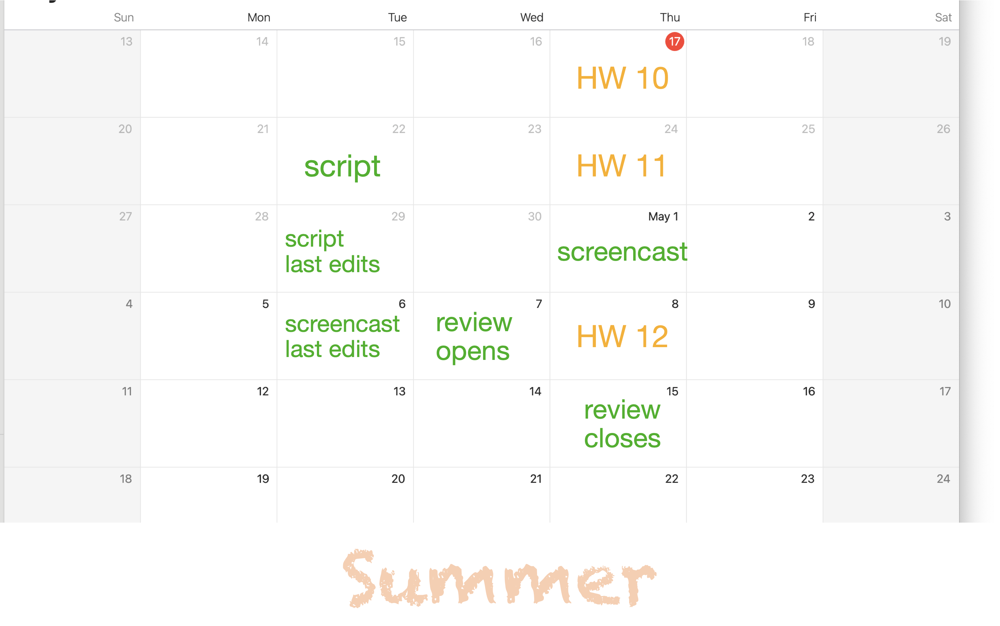
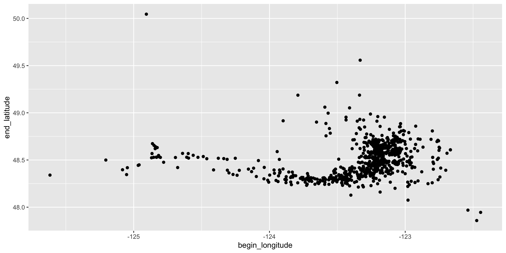
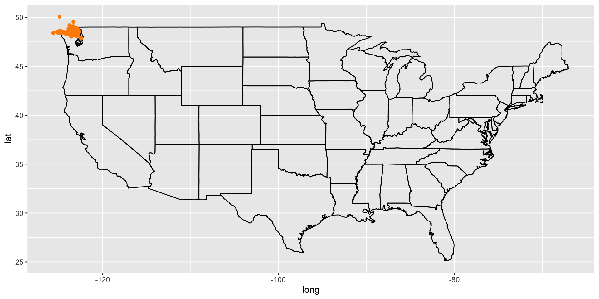
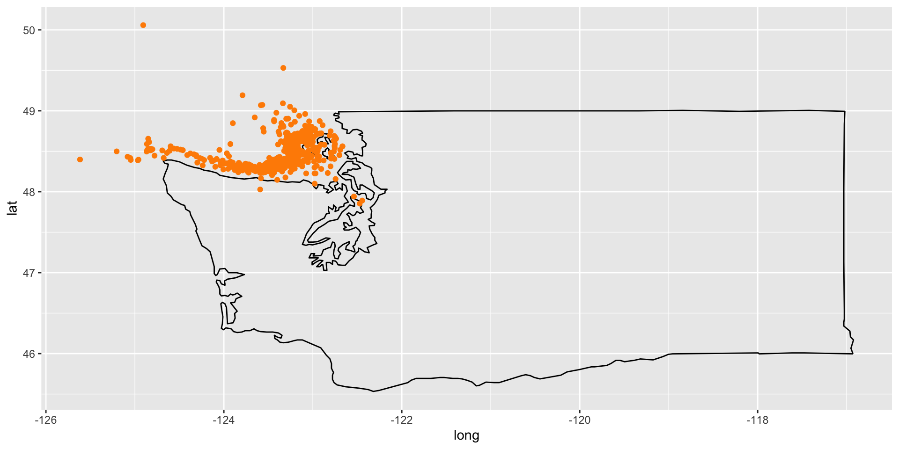

tuesdata <- tidytuesdayR::tt_load(2024, week = 42)
orcas <- tuesdata$orcasMaps and Data
slides
Week13
Finals
Logistics

Feedback
Screencasts all look good
Make sure to fill out the class survey!
Peer Review is open:
- make sure that you can access the github repo (you might have to send a comment) and the video
- watch the video
- read through the script
- run the code
- submit your feedback by Thursday next week
Access to repo
Go into Canvas
Follow the link to the youtube video
Follow the link to the repo - you most likely don’t have access to the repo
- leave your github handle in the comments of the two screencasts you are reviewing
- go into your own screencast, get the github handles from your reviewers, add them as collaborators to your repo
Add the screencast to your portfolio
portfolios are important for getting internships/industry positions
right now:
- final project is private (because of FERPA)
- no good way to make fork of private repo public (because of Github rules, protection of instructor’s IP)
best solution (right now): make a new repo (public or private), copy the necessary files, and link that to your portfolio
Maps in R and python
Last homework assignment - essentially attendance-based
Work on some map-related question, submit by the end of class on Thursday for full credit
Maps in R and python
Maps provide a lot of context

Orca Encounters
usmap <- map_data("state")
usmap |>
ggplot(aes(x = long, y = lat)) +
geom_path(aes(group = group)) +
geom_point(data = orcas, aes(x = begin_longitude, y = begin_latitude), colour = "darkorange")
Closer Orca Encounters
usmap |> dplyr::filter(region=="washington") |>
ggplot(aes(x = long, y = lat)) +
geom_path(aes(group = group)) +
geom_point(data = orcas, aes(x = begin_longitude, y = begin_latitude), colour = "darkorange")